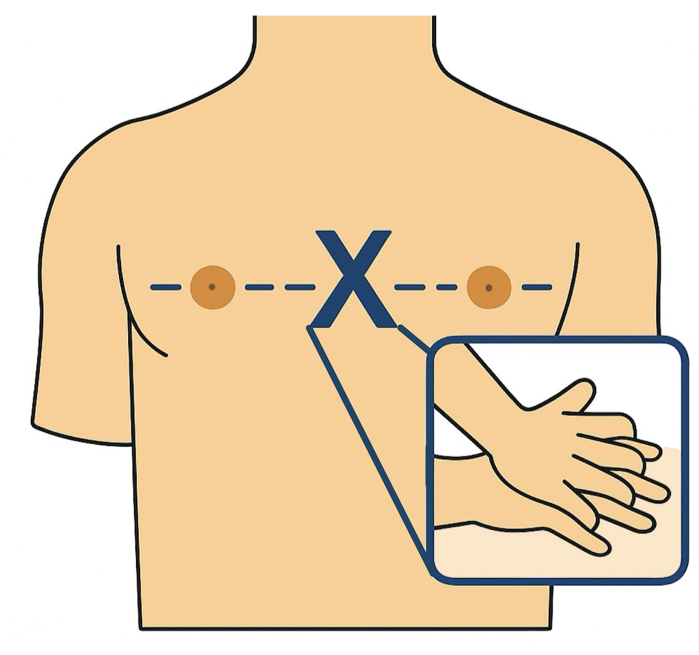
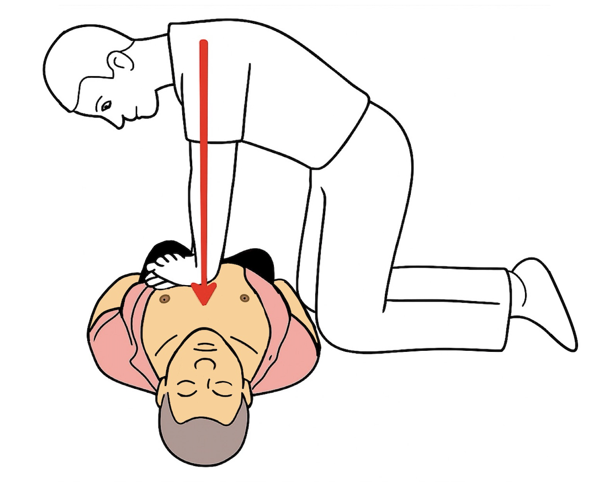

Knien Sie sich neben den Oberkörper.
Legen Sie die Handflächen flach übereinander mittig auf den Brustkorb.
Beugen Sie sich mit dem Oberkörper über die Person.
Arme durchgestreckt.
Drücken Sie kräftig senkrecht nach unten.
Der Brustkorb gibt spürbar nach - bleiben Sie dabei, das ist entscheidend.
Im Takt des Tons: Drücken - entlasten - drücken - entlasten.
Schritt 4: Abschluss
Sie haben in einer extremen Situation gehandelt - mutig und entschlossen!
Damit haben Sie alles getan, was möglich war. Der betroffenen Person wurden die bestmöglichen Chancen gegeben.
Sie könnten nun selbst Unterstützung oder ein Gespräch benötigen.
Die psychosoziale Notfallversorgung (PSNV) steht Ihnen zur Verfügung – rund um die Uhr, vertraulich, kostenfrei und ohne Hürde.
Den Kontakt zur PSNV vermitteln wir gerne über die 112 – jederzeit!